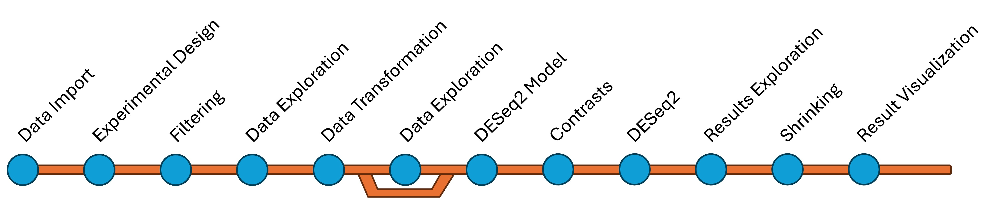

Introduzione all’analisi dei dati RNA-Seq
Introduzione sintetica di ogni fase:
- Importazione dei Dati: Importare la matrice di conteggio.
- Disegno Sperimentale: Definire la tabella di metadati con i fattori sperimentali e i livelli per ciascun campione.
- Esplorazione dei Dati (Grezzi): Analizzare le distribuzioni dei conteggi, le relazioni tra campioni e identificare potenziali outlier.
- Trasformazione dei Dati: Applicare VST o rlog per stabilizzare la varianza e migliorare l’adattamento al modello statistico.
- Esplorazione dei Dati (Trasformati): Valutare l’effetto della trasformazione e confrontarlo con i dati originali.
- Filtraggio: Rimuovere i geni con basso conteggio per aumentare l’affidabilità dell’analisi.
- Modello DESeq2: Utilizzare la distribuzione binomiale negativa per modellare i dati di conteggio e stimare i parametri chiave.
- Contrasti: Definire i confronti specifici tra le condizioni sperimentali.
-
DESeq2: Eseguire l’analisi dell’espressione differenziale con la funzione
DESeq(). - Esplorazione dei Risultati: Individuare i geni differenzialmente espressi in base a significatività e dimensione dell’effetto.
- Shrinking: Applicare lo shrinkage per migliorare l’accuratezza delle stime dei log2 fold change.
- Visualizzazione dei Risultati: Creare grafici (MA plot, volcano plot, heatmap) per rappresentare i risultati.